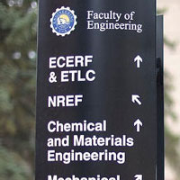
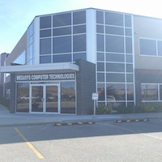

I was born in Manila Philippines and lived there for 13 years.
My family and I moved to Edmonton Alberta Canada in 2007 and lived here ever since.
I enjoy various physical activities such as snowboarding, hiking, strength training and basketball.
I'm also heavily into the car scene and enjoy modding and restoring cars.
Education
I am currently attending the University of Alberta in pursuit of a degree in Computer Engineering Coop.
Currently, I have a cumulative GPA of 3.6/4.
I have finished 7 out of 8 semesters and have done 3 out of 5 of my work terms (4 month each term).
Skills
I have gained experience in the following languages: Java, C, C++, C#, PHP, Python through various projects.
Please view my portfolio for a list of projects that I completed / I'm working on.
Grade 10 was the first time I learned about programming. I took an option
programming course which was taught in Visual Basic. In the class, I learned the basics of programming
and completed a basic Windows calculator.

September 2014
Computer Engineering
In September of 2014, I was accepted into the Engineering program at the University of Alberta.
My first programming course in a University setting is a MatLab course. I participated in an optional course group work
which involved programming a text based game in MatLab. Our group of 4 successfully completed the game!

May 2016 - April 2016
MegaSys Computer Technologies
MegaSys is a provider of a network management software for telecommunications,
energy, emergency services and government markets.
In my time with MegaSys, I worked closely with developers and performed debugging procedures on the
Telenium software suite.
I created detailed and comprehensive test cases to document issues. I also gave suggestions to improve the User Interface.
As a side project, I lead a group of 3 co-op students to create a Windows Presentation Foundation (WPF) tool
to be used in-house by developers in the company.
The application is to be used as a library for various network devices by
many manufacturers. The application stores information about the device such as MIBs, SNMP versions and protocols
to a database and is queried and sent to clients when needed.
Jan 2017 - August 2017
Edmonton Transit Service (ETS)
ETS provides public transit in the city of Edmonton. My group was involved in the Communications
department. We managed network switches, emergency phones, radio (AFFRCS), CCTV among many others.
As a Communications Engineering student, I developed modules to add support for various network device providers and implemented a
new feature for LibreNMS - an open source network monitoring system.
In addition, I took part in a big project as part of the city wide VoIP upgrade for ETS.
I compiled and detailed inventory and traced legacy wiring for 700 telephones in the system.
Be A Part
Of My
Story!
Contact Me
Please feel free to contact me at
zafra@ualberta.ca or at other options below.
Quirks
The application that allows you to track, encourage and share your habits.
Quirks is a group school project. It is an Android application which lets the user
create habits to log events on the specified occurrence date and monitor their
habits. An event can have images and/or a geolocation to revisit the event.
To encourage the user to do their events, they can receive a collectible item
that has various levels of rarity and can be traded to other users of the app.
The project is written in Java using an ElasticSearch database. An object-oriented
design is applied and multiple design patterns. View more information in the
project wiki
Language: Java
Date: December 2017
Reversi
Reversi is an 8x8 board game that features a MiniMax Algorithm AI
Reversi is a strategy board game played on an 8x8 board. The project allows two users to play
in a console against another player or a Minimax AI. More information about the game can be
found here. The MiniMax is a
recursive algorithm that repeatedly calculates scores over time and chooses the move which yields
the maximum score. A value is associated with each state of the game. This value is computed by
means of a position evaluation function (typically the max). The move that maximizes the minimum
value of the position resulting from the opponent's possible following moves is the best move to take.
More information can be found here.
Language: Python
Date: April 2016
Arduino RPM / Boost Gauge
Reads information from a car's ECU to be displayed to the user using an arduino.
This project combines by passion for coding and cars. Using an OBD-II adapter for an Arduino,
I am able to pull information about the car such as speed, RPM, boost levels and oil temperature etc...
This project pulls this information and displays it to the user using an LCD screen. Also, by setting
various RPM levels, the gauge warns the user if they should switch gears when a certain RPM is reached.
The adapter used to read information from the ECU provides regulated 5V output to provide power
for the Arduino. The adapter itself gets power from the 12V DC output from the OBD-II port of the vehicle.
This project is currently on going and is not yet finished.
Language: C++
Date: Ongoing
LibreNMS
Contributions to the open-source network monitoring system
LibreNMS is an open-source network monitoring
system which allows automatic polling and discovery of a device and an alerting system out of many features.
My contributions to LibreNMS includes the FDB table module. This module polls network devices' FDB
tables and creates a table for the user to search using a MAC address and find the switch port
that the device is connected to. This module was a heavily requested feature within the community.
More information can be found here.
In addition, I also added support for network devices by the following manufacturers: Nokia, Alcatel-Lucent,
Mitsubishi UPS, Etherwan, Hitachi SANs, Siemens switches, Opengear, Microsemi, Teradici PCoIPs, Chatsworth PDUs,
ICT PDUs and PSUs, etc...
Language: PHP, Javascript
Date: August 2017
Model Library
A Windows application that assists MegaSys employees in documenting
various network devices.
Model Library is a Windows program written in C# using the Windows Presentation Foundation (WPF) framework.
Model Library is a side project that I took the lead on during my co-op term in MegaSys Computer Technologies.
The program assists in-house employees and stores various information about network devices in a MySQL database.
The user is able to input data and query the data for varying information. They are also able to input a log
file from a network device to automatically create a database record. The program creates a PDF or excel sheet
that can be sent to clients when they request information about a specific device such as a MIB, its protocols
or the supported SNMP version.